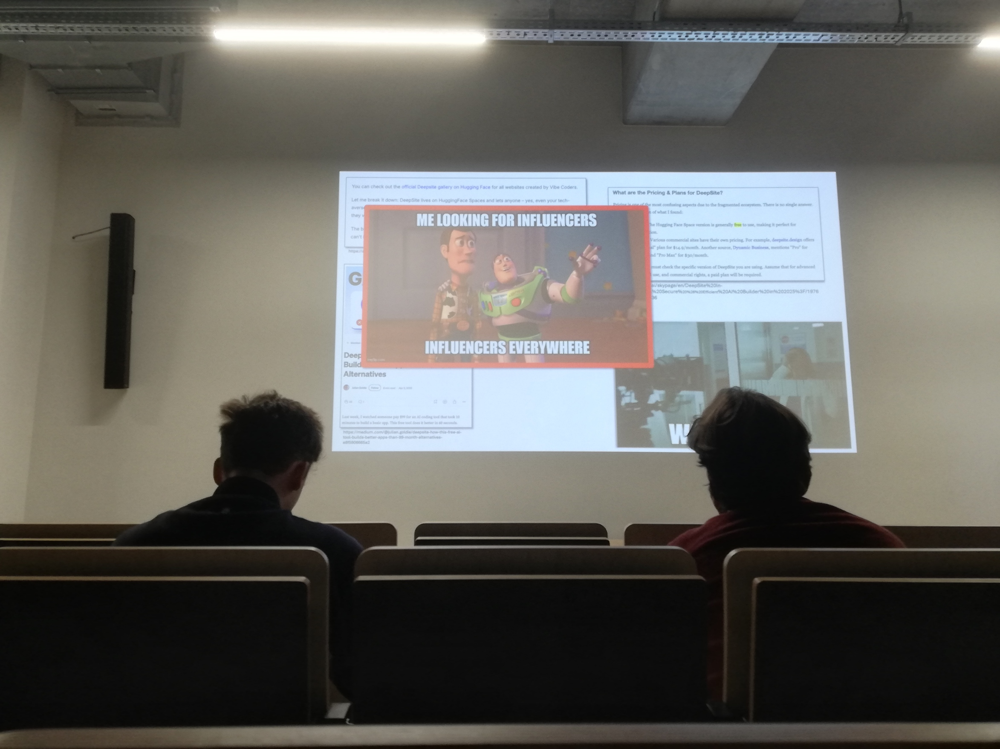

Op 9 december 2025 woonde ik een fascinerende Tech&Meet bij over een van de meest spraakmakende spelers in het huidige AI-landschap: DeepSeek. De sessie, getiteld "DeepSeek Uncovered: The Open-Source AI Challenger from the East", werd geleid door Dimitri Casier, lector Software Development en AI aan Howest.
Het was een avond die niet alleen de technische innovaties van DeepSeek belichtte, maar ook de geopolitieke en ethische verschuivingen die dit model teweegbrengt in de AI-sector.
Een Game-Changer uit het Oosten
DeepSeek heeft zich in recordtempo gepositioneerd als een volwaardige open-source uitdager voor grootmachten als OpenAI (GPT-4) en Anthropic (Claude). Tijdens de sessie doken we in de architectuur van DeepSeek-V3 en hoe zij erin slagen om vergelijkbare prestaties te leveren tegen een fractie van de kosten.
Enkele technische hoogtepunten die aan bod kwamen:
- Multi-Head Latent Attention (MLA): Een innovatieve benadering die de efficiëntie van het model aanzienlijk verhoogt.
- MoE (Mixture of Experts) architectuur: Hoe DeepSeek slim gebruik maakt van gespecialiseerde sub-netwerken om rekenkracht te optimaliseren.
- FP8 Precision Training: Het gebruik van lagere precisie tijdens het trainen om snelheid te winnen zonder in te boeten op kwaliteit.


Open-Source en Transparantie
Wat DeepSeek echt interessant maakt, is hun toewijding aan transparantie. Terwijl commerciële modellen vaak 'black boxes' blijven, biedt DeepSeek een open alternatief dat de democratisering van AI versnelt. We zagen live demo's van hun reasoning capabilities en code generatie, die indrukwekkend dicht bij de top proprietary modellen liggen.




De sessie eindigde met een boeiende discussie over de geopolitieke implicaties en de rol van Europa in deze race. Het is duidelijk dat DeepSeek geen 'eendagsvlieg' is, maar een fundamentële shift in hoe we AI ontwikkelen en inzetten.
Bekijk ook mijn originele post en de discussie op LinkedIn:
Bekijk op LinkedIn